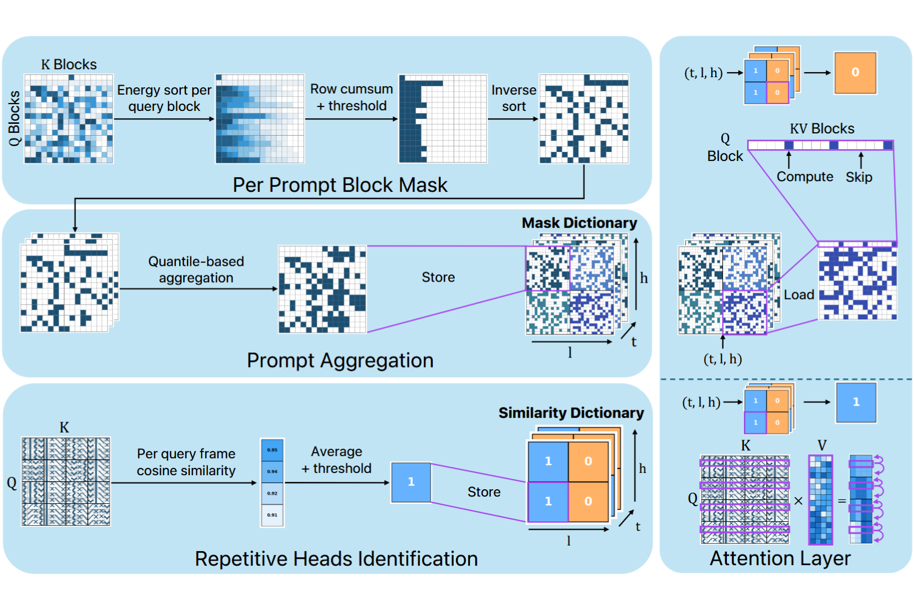
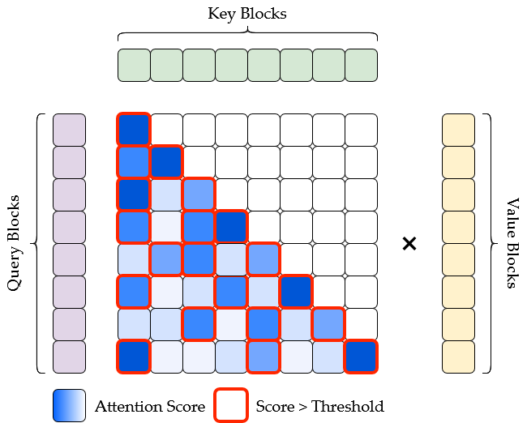
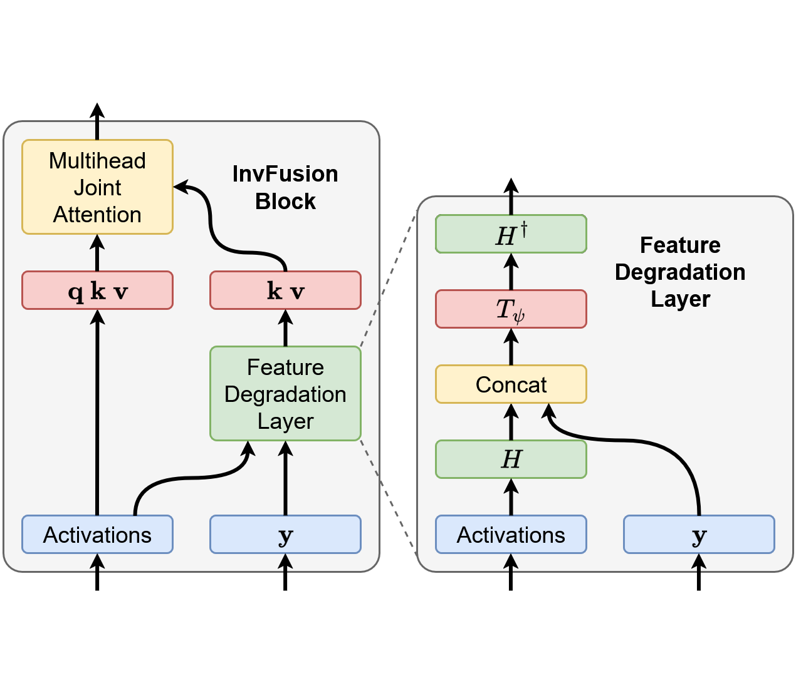
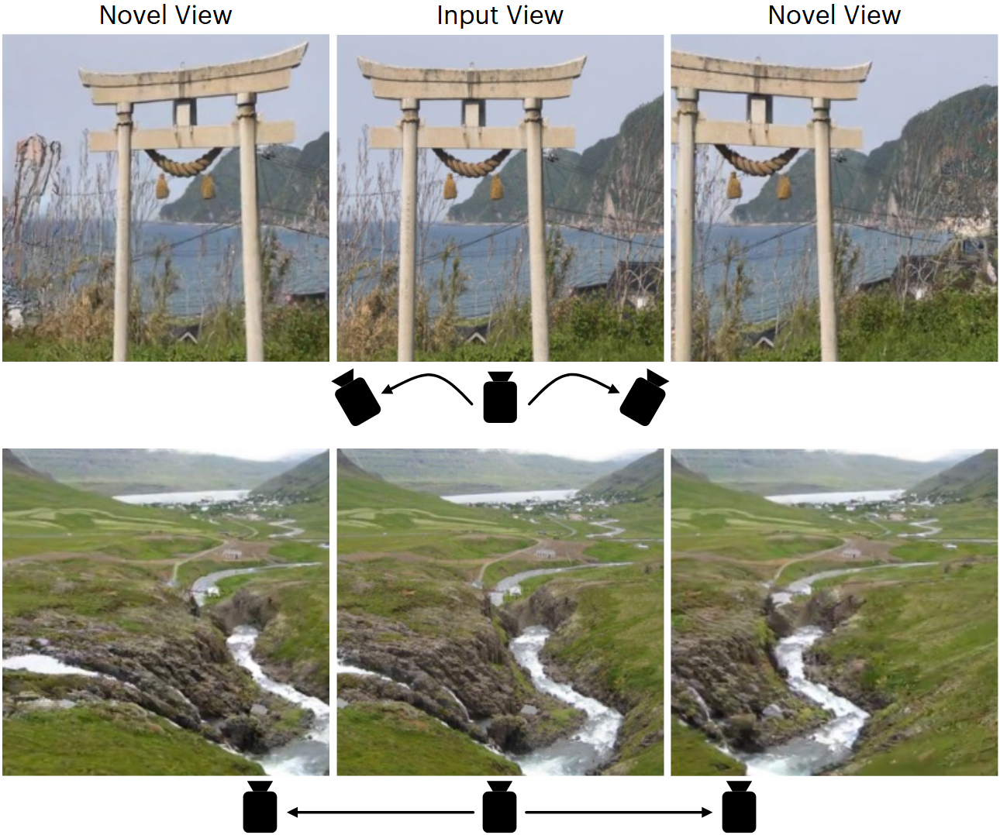
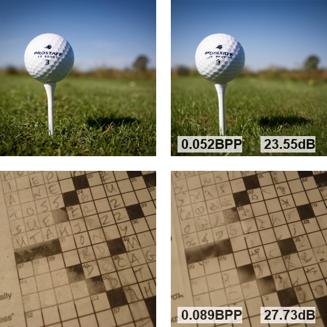
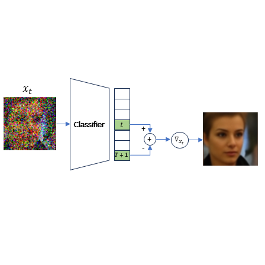
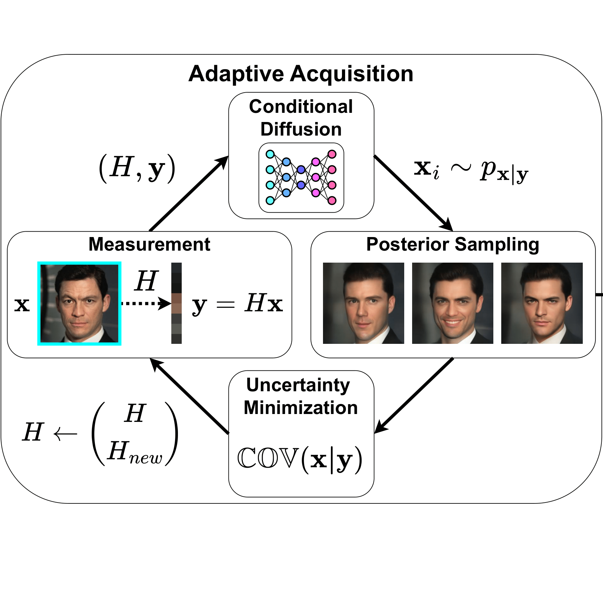
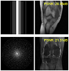
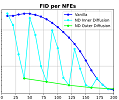

Noam Elata
Generative AI Researcher at Apple
Generative models, computer vision, and deep learning
About Me
I am a Ph.D. graduate of the Electrical and Computer Engineering faculty at the Technion, researching computer vision and machine learning under the supervision of Prof. Michael Elad and Prof. Tomer Michaeli. I am interested in generative models and theoretical deep learning, focusing most of my recent work on diffusion models. I am also interested in neural architectures, attention sparsity, and long video generation. As of summer 2024, I am also a GenAI researcher at Apple in Herzeliya.
Prior to my Ph.D. studies, I received my B.Sc., summa cum laude, in computer engineering from Technion. During my studies, I have worked as a computer vision engineer at Mobileye.
Publications
2026

Accelerating Text-to-Video Generation with Calibrated Sparse Attention
Preprint 2026
2025

Block Sparse Flash Attention
Preprint 2025
code

InvFusion: Bridging Supervised and Zero-shot Diffusion for Inverse Problems
NeurIPS 2025 — The 39th Conference on Neural Information Processing Systems
code

Novel View Synthesis with Pixel-Space Diffusion Models
CVPR 2025 — The IEEE/CVF Conference on Computer Vision and Pattern Recognition
code

PSC: Posterior Sampling-Based Compression
TMLR 2025 — Transactions on Machine Learning Research
code
2024

Classification Diffusion Models: Revitalizing Density Ratio Estimation
NeurIPS 2024 — The 38th Conference on Neural Information Processing Systems
webpagecode

Adaptive Compressed Sensing with Diffusion-Based Posterior Sampling
ECCV 2024 — The 18th European Conference on Computer Vision
☆ Rothschild Academic Excellence Award
code

GSURE-Based Diffusion Model Training with Corrupted Data
TMLR 2024 — Transactions on Machine Learning Research
code

Nested Diffusion Processes for Anytime Image Generation
WACV 2024 — The IEEE/CVF Winter Conference on Applications of Computer Vision
webpagecodespace
Awards
- NeurIPS Top Reviewer, 2025
- Rothschild Academic Excellence Award, 2024
- Meyer Fellows Prize, 2022
- EMET Excellence Program, 2020–2022
- Alfred and Anna Grey Excellence Scholarship, 2021
- Apple Excellence Award, 2021
- Technion Alumni Scholarship, 2020
Teaching & Program Committee
I have taught the following courses as a TA:
- Generative AI — Diffusion Models (CS236610, CS236759) – Winter 2023–2024 (recorded lectures), Spring 2025
- Deep Learning (ECE046211) – Spring 2023 (projects GitHub)
I have served as a reviewer at the following venues:
- ECCV 2026
- CVPR 2026
- ICML 2026
- NeurIPS 2025 (Top Reviewer)
- ICML 2025
- CVPR 2025
- ICLR 2025
- ECCV 2024
Collaborators
I have had the pleasure to work with:
- Bahjat Kawar
- Shahar Yadin
- Hyungjin Chung
- Jong Chul Ye
- Daniel Soudry
- Israel Cohen
- Roy Ganz
- Hila Manor
- Yaniv Blumenfeld
- Sean Man
- Ron Raphaeli
- Itay Lamprecht
- Daniel Ohayon
- Itay Hubara
- Ido Blayberg
- Ohad Amsalem
- Shai Yehezkel
- Yaron Ostrovsky-Berman
- Miriam Farber
- Ron Sokolovsky